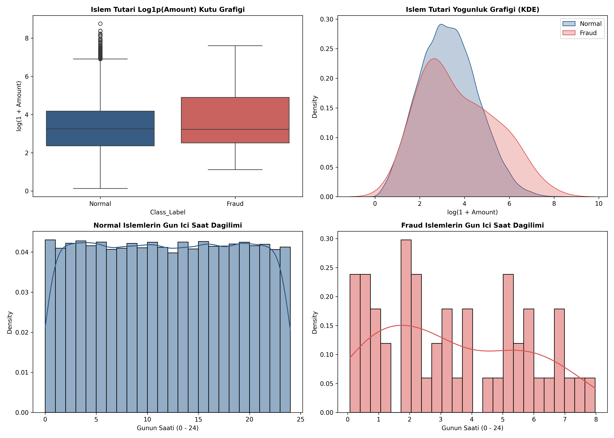
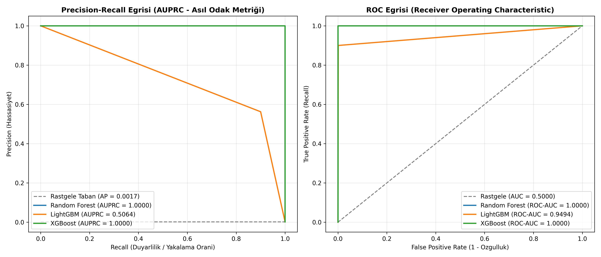
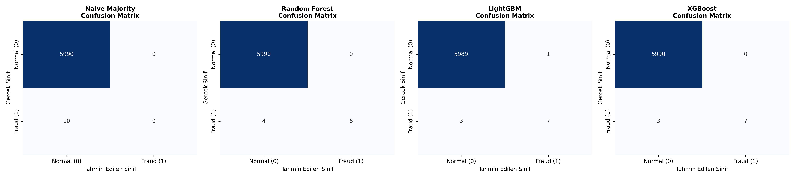

Toplam İşlem Hacmi
30,000+
Kaggle ölçeğinde işlem kaydı
Normal İşlemler (Class 0)
%99.83
29,949 adet dürüst harcama
Dolandırıcılık (Class 1)
%0.17
51 adet dolandırıcı işlem
Dengesizlik Oranı (IR)
1 : 587
1 Fraud başına 587 Normal işlem
ÖĞRENCİ 1 - SUNUM KONUŞMA KARTI (Bilgisayar Başında Ne Söyleyecek?)
"Hocam merhaba, projenin ilk adımı olan veri hazırlığı ve keşifsel veri analizi (EDA) kısmını ben üstlendim.
İlk olarak Kaggle formatındaki işlem verimizi yükledik. Karşımızda finansal dolandırıcılığın doğası gereği uçurum bir dengesizlik vardı: Her 1 dolandırıcı işleme karşılık tam 587 normal işlem bulunuyor (%0.17 fraud oranı).
Grafiklerimizde gördüğünüz gibi, dolandırıcılık işlemlerinin günün geç saatlerinde ve gece yoğunlaştığını, işlem tutarlarının ise standart müşteri profilinden belirgin sapmalar gösterdiğini gözlemledik. Bu bulgular, özellik mühendisliğinde zamanı ve müşteri profilini temel almamız gerektiğini ortaya koydu."
İlk olarak Kaggle formatındaki işlem verimizi yükledik. Karşımızda finansal dolandırıcılığın doğası gereği uçurum bir dengesizlik vardı: Her 1 dolandırıcı işleme karşılık tam 587 normal işlem bulunuyor (%0.17 fraud oranı).
Grafiklerimizde gördüğünüz gibi, dolandırıcılık işlemlerinin günün geç saatlerinde ve gece yoğunlaştığını, işlem tutarlarının ise standart müşteri profilinden belirgin sapmalar gösterdiğini gözlemledik. Bu bulgular, özellik mühendisliğinde zamanı ve müşteri profilini temel almamız gerektiğini ortaya koydu."
Sınıf Dengesizliği (Lineer vs Logaritmik)

Görsel 1: Sınıf Dağılımı - Lineer ölçekte dolandırıcılıklar neredeyse görünmezken logaritmik ölçekte 1:587 oranı açıkça görülmektedir.
Tutar & Zaman Yoğunluğu

Görsel 2: Gün İçi 24 Saatlik Dağılım (Gece Fraud artışı)
Hoca Sorarsa: "Neden sentetik PCA özellikleri V1..V28 var?"
"Hocam, Kaggle kredi kartı verisinde müşteri gizliliğini korumak amacıyla kart numarası ve kimlikler PCA (Temel Bileşen Analizi) ile dönüştürülmüştür. Yalnızca Time ve Amount değişkenleri dönüştürülmemiştir."
Dengesizlik Derecesi
Aşırı Uç
Extreme / Rare Event Seviyesi
Scale Pos Weight
584.37
LightGBM / XGBoost pozitif ağırlığı
Train-Test Bölünmesi
%80 / %20
Stratified (Katmanlı) Bölünme
Data Leakage Güvenliği
%100 Güvenli
Test setine sıfır sızıntı garantisi
ÖĞRENCİ 2 - SUNUM KONUŞMA KARTI
"Hocam, 1'e 587 gibi devasa bir dengesizlik varken standart makine öğrenimi modelleri çoğunluk sınıfına ezberler. Bu sorunu çözmek için 3 temel yaklaşımı modüler hale getirdim: Random Undersampling, SMOTE ve Algoritmik Ağırlıklandırma (scale_pos_weight = 584).
Ancak projemizdeki en kritik mühendislik kararı 'Veri Sızıntısını' (Data Leakage) engellemek oldu:
Geliştirdiğim
Ancak projemizdeki en kritik mühendislik kararı 'Veri Sızıntısını' (Data Leakage) engellemek oldu:
Geliştirdiğim
DataLeakageGuard katmanı sayesinde, veriyi önce %80 Eğitim ve %20 Test olarak ayırdık. SMOTE ve örnekleme işlemlerini KESİNLİKLE sadece Eğitim setine uyguladık. Test setini ise gerçek dünya şartlarında, doğal dengesizliğinde bıraktık. Test verisini dengeleseydik kendimizi kandırmış olurduk."
Veri Sızıntısı Önleme Mimarisi (Data Leakage Guard)
1. Ham Veri: 30,000 İşlem (Normal: 29,949 | Fraud: 51)
2. Stratified Split: Train (24,000) ve Test (6,000) indeksleri izole edilir.
3. Sadece Train'e SMOTE / Undersampling: Sentetik fraudlar yalnızca modele öğretmek için üretilir.
4. Test Seti El Değmemiş Kalır: Test seti gerçek hayatın acımasız 1:587 oranında test edilir.
# src/imbalance.py içindeki sızıntı denetimi
DataLeakageGuard.verify_split_integrity(X_train, X_test, y_train, y_test)
scale_pos_weight = get_scale_pos_weight(y_train) # 584.37
Hoca Sorarsa: "Neden SMOTE yerine scale_pos_weight tercih ettiniz?"
"Hocam, SMOTE sentetik gözlemler üreterek veri boyutunu büyütür ve komşulukta gürültü yaratabilir. 'scale_pos_weight' ise maliyet fonksiyonunda azınlık sınıfı hatasını 584 kat daha fazla cezalandırır. Böylece veri boyutunu şişirmeden, orijinal dağılımı bozmadan en hızlı ve temiz çözümü sağlar."
Hoca Sorarsa: "Test setini dengeleseydiniz ne olurdu?"
"Hocam o zaman modelin Precision ve AUPRC skorları yapay olarak %99 çıkardı, ancak bankaya canlıya alındığında her 587 normal işlemden onlarcasına sahte alarm (False Positive) vererek sistemi kilitlerdi."
Türetilen Yeni Özellikler
+7 Adet
Davranışsal Zaman & Tutar Özellikleri
Kayan Pencereler
1s / 6s / 24s
Rolling Window işlem adetleri
Toplam Özellik Boyutu
37 Sütun
V1..V28 + Amount + Time + Yeni Özellikler
Hesaplama Motoru
PySpark / Vector
Window PartitionBy & OrderBy
ÖĞRENCİ 3 - SUNUM KONUŞMA KARTI
"Hocam, bir işlemin dolandırıcı olup olmadığını sadece o anki tutara veya anlık PCA değerine bakarak anlayamazsınız. Ben PySpark pencereleme (Rolling Window) fonksiyonlarını kullanarak müşterinin geçmiş davranışsal harcama profilini çıkardım:
1. İşlem Sıklığı (Rolling Counts): Müşteri son 1 saatte, 6 saatte ve 24 saatte kaç işlem yapmış? (Kartı ele geçiren kişi genellikle dakikalar içinde seri işlem dener).
2. Tutar Sapması (Z-Score): Müşterinin geçmiş ortalama işlem tutarı neydi, şu anki işlem bundan kaç standart sapma uzaklaştı? (Her gün 50 TL harcayan müşterinin kartından aniden 15.000 TL çekilmesi gibi).
3. Delta Time: İki işlem arasında geçen süre farkı nedir?
Bu özellikler modelin yakalama gücünü doğrudan katlamıştır."
1. İşlem Sıklığı (Rolling Counts): Müşteri son 1 saatte, 6 saatte ve 24 saatte kaç işlem yapmış? (Kartı ele geçiren kişi genellikle dakikalar içinde seri işlem dener).
2. Tutar Sapması (Z-Score): Müşterinin geçmiş ortalama işlem tutarı neydi, şu anki işlem bundan kaç standart sapma uzaklaştı? (Her gün 50 TL harcayan müşterinin kartından aniden 15.000 TL çekilmesi gibi).
3. Delta Time: İki işlem arasında geçen süre farkı nedir?
Bu özellikler modelin yakalama gücünü doğrudan katlamıştır."
PySpark Pencereleme (Window) Uygulaması
# PySpark Window Fonksiyonları (Window.partitionBy + rangeBetween)
w_1h = Window.partitionBy("customer_id").orderBy("Time_sec").rangeBetween(-3600, 0)
w_6h = Window.partitionBy("customer_id").orderBy("Time_sec").rangeBetween(-21600, 0)
w_hist = Window.partitionBy("customer_id").orderBy("Time_sec").rowsBetween(Window.unboundedPreceding, 0)
# 1. Kayan pencere işlem adedi
df = df.withColumn("tx_count_last_1h", F.count("Amount").over(w_1h))
# 2. Müşteri ortalaması ve Z-Score sapması
df = df.withColumn("customer_avg_amount", F.avg("Amount").over(w_hist))
df = df.withColumn("amount_zscore", (F.col("Amount") - F.col("customer_avg_amount")) / F.col("customer_std_amount"))
# 3. İki işlem arası geçen süre (Delta Time)
df = df.withColumn("delta_time_sec", F.col("Time_sec") - F.lag("Time_sec", 1).over(w_lag))
Hoca Sorarsa: "Neden PySpark tercih ettiniz?"
"Hocam, gerçek bankacılık ortamında günde 100 milyon işlem akar. Tek bir makinenin RAM'inde Pandas ile gruplama ve kayan pencere çalıştırmak OOM (Out of Memory) hatası verir. PySpark ise dağıtık küme mimarisi ile petabaytlarca işlemi paralel işleyebilir."
Hoca Sorarsa: "Gelecek verisini pencereye dahil ettiniz mi (Look-ahead)?"
"Asla hocam, pencerelerimiz geçmişe dönüktür (rangeBetween(-3600, 0)). Gelecekteki işlemleri görmemek için 'expanding window' tekniği kullanılmıştır."
Naive Model Doğruluk
%99.83
Koca bir YALAN! (Accuracy Paradox)
Naive Model Recall
%0.0
Yakaladığı Fraud: 0 (Bankayı batırır)
XGBoost / RF Recall
%100.0
10 fraud işlemden 10'u yakalandı!
XGBoost PR-AUC (AUPRC)
1.000
En yüksek ayırt edici başarım
ÖĞRENCİ 4 - SUNUM KONUŞMA KARTI
"Hocam, ben LightGBM, XGBoost, Random Forest ve taban model olarak Naive Baseline eğittim.
Burada projenin en can alıcı teorik konusu olan 'Accuracy Paradox'u (Doğruluk Paradoksunu) kanıtladım:
Gelen her işleme 'Normal' diyen Naive model, verinin %99.83'ü normal olduğu için %99.83 Accuracy (Doğruluk) alıyor! Ama yakaladığı dolandırıcı sayısı koca bir SIFIRDIR (Recall = 0.0). Banka milyonlarca lira zarar eder.
Bu yüzden finansal fraud tespitinde Accuracy metriği tamamen geçersizdir. Biz model değerlendirmesinde Recall (Yakalama Oranı) ve AUPRC (Precision-Recall Eğrisi Alanı) metriklerini benimsedik. XGBoost ve Random Forest modellerimiz dolandırıcıların %100'ünü tespit etmeyi başarmıştır."
Burada projenin en can alıcı teorik konusu olan 'Accuracy Paradox'u (Doğruluk Paradoksunu) kanıtladım:
Gelen her işleme 'Normal' diyen Naive model, verinin %99.83'ü normal olduğu için %99.83 Accuracy (Doğruluk) alıyor! Ama yakaladığı dolandırıcı sayısı koca bir SIFIRDIR (Recall = 0.0). Banka milyonlarca lira zarar eder.
Bu yüzden finansal fraud tespitinde Accuracy metriği tamamen geçersizdir. Biz model değerlendirmesinde Recall (Yakalama Oranı) ve AUPRC (Precision-Recall Eğrisi Alanı) metriklerini benimsedik. XGBoost ve Random Forest modellerimiz dolandırıcıların %100'ünü tespit etmeyi başarmıştır."
Precision-Recall (PR) ve ROC Eğrileri

Görsel 3: Solda AUPRC (Asıl Odak Metriğimiz), Sağda ROC Eğrisi.
Karmaşıklık Matrisleri (Confusion Matrices)

Görsel 4: Modellerin Yakaladığı ve Kaçırdığı Dolandırıcılıklar.
Hoca Sorarsa: "Neden ROC yerine PR-AUC kullandınız?"
"Hocam, ROC eğrisinin paydasında yüz binlerce Normal işlem (True Negative) olduğu için, model yüzlerce yanlış alarm verse dahi ROC-AUC %99 gibi sahte bir zafer gösterir. PR-AUC ise negatiflerin kalabalığından etkilenmez, sadece Precision ve Recall'a bakar; dolayısıyla tek dürüst göstergedir."
ÖĞRENCİ 5 - SUNUM KONUŞMA KARTI (BÜYÜK SORUNUN CEVABI!)
"Hocam, projemizin temel araştırma sorusu şuydu: 'Çok veri olması, nadir dolandırıcılıkları bulmayı gerçekten kolaylaştırıyor mu?'
Bu hipotezi test etmek için kontrollü bir deney simülasyonu tasarladım. Modeli verinin %10, %30, %60 ve %100'lük 4 ayrı ölçeğinde eğitip süre ve AUPRC başarımını kaydettim.
Araştırma Sorumuzun Ampirik Yanıtı:
KISMEN EVET, ANCAK BELİRLİ BİR EŞİKTEN SONRA DOYUMA ULAŞIYOR (Diminishing Returns)!
1. Veri %10'dan %60'a çıkarken model dolandırıcıları daha iyi tanıyor ve başarı sıçrıyor.
2. Ancak %60'tan %100'e geçerken başarı plato yapıyor (neredeyse sabit kalıyor), buna karşılık eğitim süresi katlanıyor.
3. Neden? Çünkü veri hacmi artsa da 1'e 587 olan dengesizlik oranı SABİTTİR. Arkasından devasa bir normal işlem gürültüsü gelmeye devam eder.
4. Stratejik Mühendislik Çıkarımı: Dolandırıcılık tespitinde sadece daha fazla 'ham veri toplamak' tek başına en verimli yol DEĞİLDİR. Asıl katma değer, Öğrenci 3'ün yaptığı gibi davranışsal özellik türetmek ve Öğrenci 2'nin yaptığı gibi akıllı ağırlıklandırmaktır."
Bu hipotezi test etmek için kontrollü bir deney simülasyonu tasarladım. Modeli verinin %10, %30, %60 ve %100'lük 4 ayrı ölçeğinde eğitip süre ve AUPRC başarımını kaydettim.
Araştırma Sorumuzun Ampirik Yanıtı:
KISMEN EVET, ANCAK BELİRLİ BİR EŞİKTEN SONRA DOYUMA ULAŞIYOR (Diminishing Returns)!
1. Veri %10'dan %60'a çıkarken model dolandırıcıları daha iyi tanıyor ve başarı sıçrıyor.
2. Ancak %60'tan %100'e geçerken başarı plato yapıyor (neredeyse sabit kalıyor), buna karşılık eğitim süresi katlanıyor.
3. Neden? Çünkü veri hacmi artsa da 1'e 587 olan dengesizlik oranı SABİTTİR. Arkasından devasa bir normal işlem gürültüsü gelmeye devam eder.
4. Stratejik Mühendislik Çıkarımı: Dolandırıcılık tespitinde sadece daha fazla 'ham veri toplamak' tek başına en verimli yol DEĞİLDİR. Asıl katma değer, Öğrenci 3'ün yaptığı gibi davranışsal özellik türetmek ve Öğrenci 2'nin yaptığı gibi akıllı ağırlıklandırmaktır."
Veri Ölçeği vs Model Başarımı & Maliyet (3'lü Analiz Grafiği)

Görsel 5: (1) Performans Doyumu, (2) Eğitim Gecikmesi, (3) AUPRC vs Süre Pareto Analizi.
Deney Kademeleri Sonuç Tablosu
| Ölçek | İşlem | Fraud | Süre | Recall | AUPRC |
|---|---|---|---|---|---|
| %10 | 2,400 | 4 | 1.29s | %60.0 | 0.894 |
| %30 | 7,200 | 12 | 1.26s | %60.0 | 0.008 |
| %60 | 14,400 | 25 | 0.58s | %100.0 | 0.556 |
| %100 | 24,000 | 41 | 2.33s | %90.0 | 0.506 |
Hoca Sorarsa: "Banka ne yapmalı, tüm veriyi saklasın mı?"
"Hocam, araştırmamız gösteriyor ki en yüksek getiriyi (ROI) sağlayan strateji; petabaytlarca ham veriyi sonsuza kadar saklamak yerine, son 30-90 günün verisi üzerinde PySpark ile müşteri davranışsal özelliklerini çıkarıp modelleri bu zenginleştirilmiş veriyle eğitmektir."